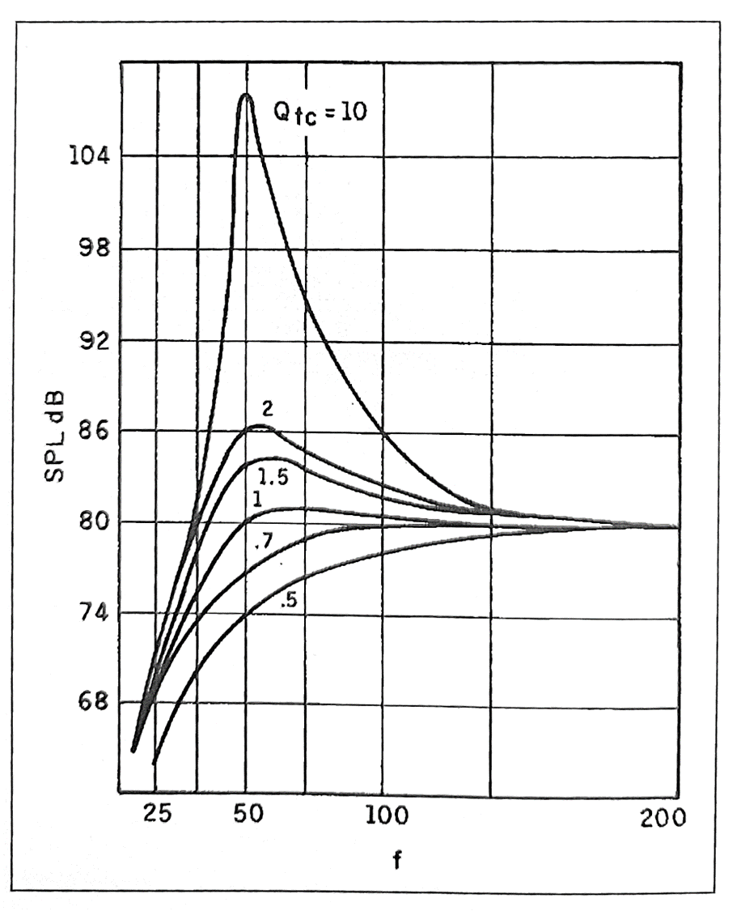
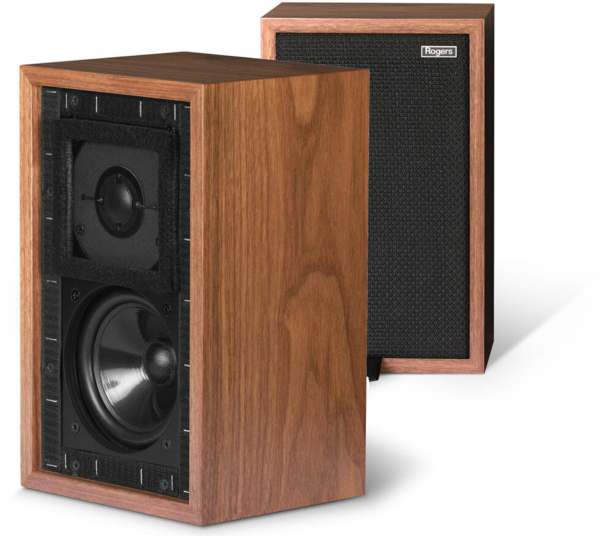
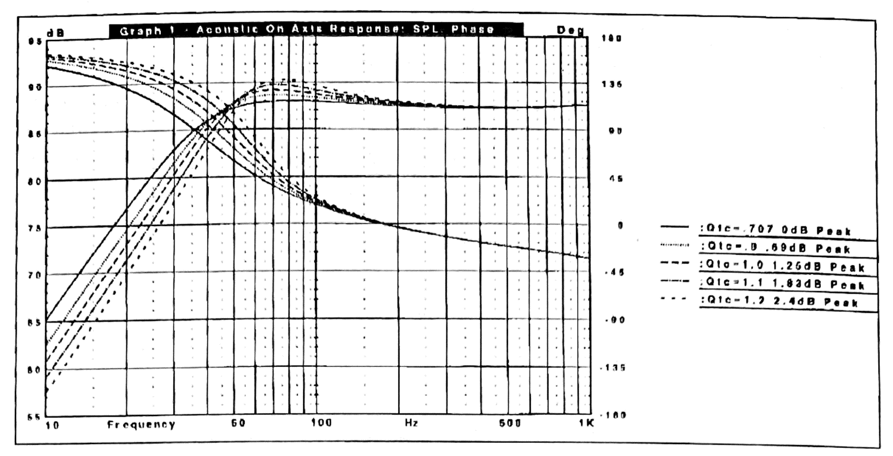
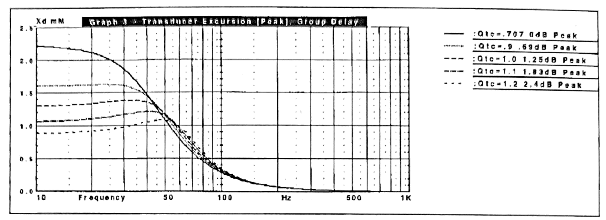
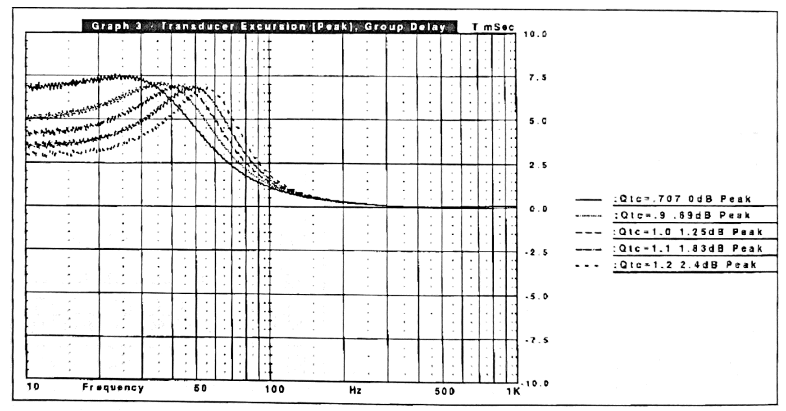
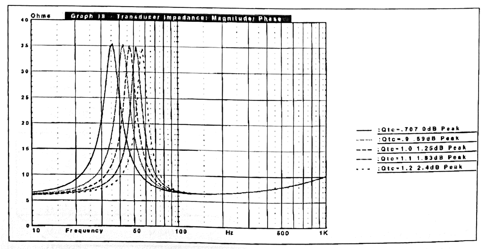
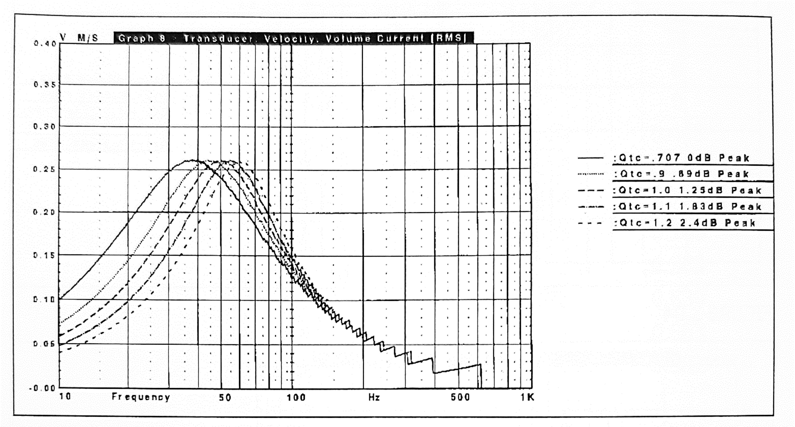

1.30 ค่า Q ของดอกลำโพง และการตอบสนองความถี่ของตู้ปิด
เป้าหมายในการเลือกขนาดของตู้ลำโพงให้กับดอกหนึ่ง ๆ จริง ๆ แล้วมีจุดประสงค์เพื่อให้ได้คุณลักษณะของเสียงที่ต้องการ ซึ่งตู้ลำโพงปิดนี้สามารถทำได้ด้วยการวัดและเลือกค่า Q ที่ต้องการ โดยค่า Q ในที่นี้จะใช้ในการบอกลักษณะการขยายของเสียง ณ ความถี่สั่นพ้องของตู้ลำโพง แสดงถึงระดับการความคุมการตอบสนองความถี่ผ่านปัจจัยทางไฟฟ้า ทางกล และนิวเมติกส์ (pneumatic) ของทั้งตัวดอกลำโพงและตู้ลำโพง โดยความสัมพันธ์ระหว่างผลตอบสนองความถี่และค่า Q จะแสดงไว้ในรูปที่ 1.01
Title
 รูปที่ 1.01 ผลตอบสนองความถี่ของตู้ปิดที่ค่า Q ต่าง ๆ
จากกราฟผลตอบสนองความถี่ในรูป 1.1 อย่างแรกที่สังเกตุได้คือกราฟทุกเส้นจะมีความชันม้วนตัวลงที่ประมาณ 12 dB/octave ซึ่งจะน้อยกว่าเมื่อเทียบกับตู้เปิดหรือตู้พาสซีฟที่อยู่ที่ 24 dB/octave เมื่อเทียบตู้ปิดกับตู้เปิดทีมี เดียวกัน ตู้ปิดจะมีเบสที่ลึกกว่าและผลตอบสนองชั่วครู่ที่เสถียรกว่า
อย่างที่สองคือที่ค่า แต่ละค่าจะมีลักษณะเฉพาะที่แตกต่างกันซึ่งแยกได้ดังนี้
การหน่วงขั้นวิกฤต (Critically Damped) - ภาวะชั่วคราวสมบูรณ์ (transient perfect)
Bessel response () - เวลาหน่วงเรียบที่สุด (max flat delay)
Butterworth response () -ผลตอบสนองความถี่เรียบที่สุด
Chebyshev (elliptical - ) Equal Ripple response - รับกำลังได้สูงสุด ประสิทธิภาพสูงสุด แลกกับผลตอบสนองชั่วครู่ที่ลดลง
หรือพูดได้ว่า ประมาณ 1 จะให้เสียงที่อุ่น และได้ถูกกล่าวว่าเป็นที่ “ขายดี” ตามท้องตลาด
ที่ประมาณ 0.8 จะให้เสียงที่มีรายละเอียดมากขึ้น (จากผลตอบสนองชั่วครู่ที่ดีขึ้น)
ที่ 0.5 มักจะให้เสียงความรู้สึกแน่นมากและอาจจะให้ความรู้สึกทึบได้ แต่บางเจ้าก็จะบอกว่าค่าประมาณ 0.5-0.6 เป็นค่าที่ดีที่สุด
ในบางครั้งก็จะเจอลำโพงเช่น Rogers LS3/5A ที่มีค่า สูงถึง 1.2 ซึ่งในกรณีนี้ออกแบบเพื่อให้ลำโพงมอร์นิเตอร์ขนาดเล็กมีเบสมากขึ้น
แต่โดยทั่วไปแล้ว ก็มักจะจัดอยู่ในเสียงที่ไม่ดี
Title
 รูปที่ 1.01.1 Rogers LS3/5A จาก www.rogers-hifi.uk
ตารางที่ 1.00 ความสัมพันธ์ระหว่าง , ความต่างระหว่างจุดดังสุดและส่วนการตอบสนองความถี่ที่เรียบ (Peak dB), อัตราส่วนระหว่างความถี่ที่เกิดความดังสูงสุด กับความถี่ของตู้ลำโพง และ อัตราส่วนระหว่างความถี่เกิดการกระจัดสูงสุดของดอกลำโพง กับความถี่ของตู้ลำโพง
ตาราง 1.00
| Peak dB | |||
|---|---|---|---|
| 0.5 | 0 | - | 0 |
| 0.577 | 0 | - | 0 |
| 0.707 | 0 | - | 0 |
| 0.8 | 0.213 | 2.138 | 0.468 |
| 0.9 | 0.687 | 1.616 | 0.619 |
| 1.0 | 1.249 | 1.414 | 0.707 |
| 1.1 | 1.833 | 1.305 | 0.766 |
| 1.2 | 2.412 | 1.238 | 0.808 |
| 1.3 | 2.974 | 1.192 | 0.839 |
| 1.4 | 3.515 | 1.159 | 0.863 |
| 1.5 | 4.033 | 1.134 | 0.882 |
เมื่อ
ในปี 1969 มีการออกแบบสำรวจโดยศาตราจารย์ Richard Small ที่ประเทศอเมริกา อังกฤษ และยุโรป มีผลสรุปว่าลำโพงปิดแบบ AS ส่วนใหญ่จะมีอยู่ 2 ประเภท
- จุดตัดความถี่ต่ำอยู่ใต้ 50 Hz ค่า สูงสุดที่ 1.1 และขนาดตู้ใหญ่กว่า 40 ลิตร
- จุดตัดความถี่ต่ำสูงกว่า 50 Hz ค่า อยู่ระหว่าง 1.2 - 2.0 ขนาดตู้เล็กกว่า 56 ลิตร
ลำโพงประเภทที่ 1 มักจะใช้เปิดเพลงออร์เคสตรา ส่วนประเภทที่สองที่มีเบสมากกว่ามักจะใช้เปิดเพลงป๊อป 60s
1.35 วิธีวิเคราะห์ค่า Q ของตู้ลำโพงแบบอื่น ๆ
ควบคู่กับการเปลี่ยนแปลงจุดสูงสุด และ ยังมีตัวแปรอื่น ๆ ที่สามารถใช้อธิบาย ของตู้อีก เมื่อค่าความหน่วงเชิงกลของดอกลำโพงมีการเปลี่ยนแปลงและลดการตอบสนองอิมพัลส์ลง (เช่นจากเบสแน่น ๆ ไปเป็น เบสบวม ๆ) จะเกิดการเปลี่ยนแปลงขึ้น นั้นคือมุมของเฟสที่ , การขยับของดอกลำโพง, กราฟปริมาณเวลาหน่วงเชิงกลุ่ม, กราฟอิมพีแดนซ์, ความเร็วในการขยับของกรวยลำโพง และ ปริมาณกระแส สูตรที่ใช้สำหรับคำนวณค่าเหล่านี้อาจจะใช้หัวคิดคำนวณได้ยาก แต่ปัจจุบันก็มีโปรแกรมคอมพิวเตอร์ที่สามารถคำนวณค่าพวกนี้ได้ง่ายขึ้น เปลี่ยนจากเดิมที่แทบจะคำนวณด้วยมือไม่ได้เลยให้สามารถเห็นภาพได้ทันที
เมื่อทดลองจำลองโมเดลตู้ลำโพงดอก 10 นิ้ว (Audio Concepts AC-10) ที่มี ตั้งแต่ 0.7 ถึง 1.5 และปรับตัวแปรอื่น ๆ ให้เหมาะสำหรับตู้แบบ IB ไม่มีต่ออนุกรมตัวต้านทานเพิ่ม และมีการใส่ไฟเบอร์กลาส 50% ของปริมาตร (50% ของปริมาตรนี้หมายถึงบุผนังลำโพงภายในทุกด้านยกเว้นด้านลำโพง ด้วยไฟเบอร์กลาสหนา 10 ซม. ความหนาแน่น 16 g/l)
ปริมาตรของตู้ลำโพง ถูกคำนวณโดยใช้ ตั้งได่ผลออกมาดังในตาราง 1.01
ตาราง 1.01
| dB Peak | Phase Angle | Slope dB/oct. | |||
|---|---|---|---|---|---|
| 0.7 | 0 | 90° | 10.60 | 35 | 73.5 |
| 0.9 | 0.69 | 97° | 11.95 | 39 | 45.3 |
| 1.0 | 1.25 | 100° | 12.08 | 43 | 33.4 |
| 1.1 | 1.83 | 103° | 12.82 | 46 | 26.1 |
| 1.2 | 2.41 | 106° | 13.19 | 50 | 21.0 |
| 1.5 | 4.0 | 110° | 13.96 | 64 | 11.9 |
จากข้อมูลในตาราง 1.01 กับผลการจำลองระดับความดันเสียง (SPL) และเฟส (Phase) ในรูปที่ 1.02 จะแสดงให้เห็นว่าเมื่อค่าของ สูงขึ้น ตำแหน่ง , เฟส, และความชันที่ ก็เพิ่มขึ้นด้วย
เฟส (Phase) ที่ใช้กับลำโพงจะหมายถึง ฟังก์ชันความชันของระดับความดันเสียง ซึ่งถ้าไม่มีตัวแปรอื่น ๆ มาทำให้เฟสเลื่อนผิดไปจากฟังก์ชันความชัน จะเรียกว่าระบบนี้ว่า ระบบเฟสต่ำสุด (minimum phase system) ซึ่งลำโพงส่วนใหญ่จะเป็นแบบนั้น เฟสจะถูกวัดโดยดูจากระยะเวลาตั้งแต่สัญญาณขาเข้าจนถึงสัญญาณออกมาจากกรวยลำโพง ยิ่งระยะเวลาหน่วงมากความชันของกราฟเฟสในความถี่นั้นก็จะเพิ่มขึ้น กราฟเฟสในรูปที่ 1.02 แสดงให้เห็นถึงการเปลี่ยนแปลงของความชันม้วนลงของระดับความดันเสียง
Title
 รูปที่ 1.02 ผลตอบสนองความถี่แกนหลัก ระดับความดันเสียง (SPL) และ เฟส
รูปที่ 1.03 แสดงช่วงชักของดอกลำโพงในแต่ละค่า เมื่อขนาดตู้ใหญ่ขึ้น จะลดลง ช่วงชักสูงสุดของกรวยลำโพงก็จะเพิ่มขึ้น และระดับความดังสูงสุดก่อนที่ลำโพงจะเกิดเสียงเพี้ยนเกินรับได้ลดลง เมื่อดูกราฟนี้ก็จะเริ่มเห็นสิ่งที่ต้องแลกระหว่างความหน่วงที่ดีและการรับกำลังที่ดี (power handling)
Title
 รูปที่ 1.03 ช่วงขยับของดอกลำโพง
INFO
ความเพี้ยน (distortion) ที่เกินรับได้ อาจจะเป็นเรื่องอัตวิสัยของแต่ละคน แต่ละคนรับรู้ตวามเพี้ยนได้ไม่เท่ากันขึ้นอยู่กับความเคยชินและประสบการณ์ แนวทางที่ผมใช้จะแบ่งตามระดับของคุณภาพลำโพง ลำโพงที่ดีควรมีค่าความเพี้ยนไม่เกิน 1% ลําโพงไฮเอนด์ควรมีค่าไม่เกิน 0.5% ลำโพงทั่ว ๆ ไปไม่เกิน 2-3 % แต่ถ้าความเพี้ยนเกิน 5% แสดงว่าลำโพงนั้นมีปัญหาแล้ว ทั้งนี้ความเพี้ยนส่วนหนึ่งอาจเกิดจากการเปิดเสียงที่ดังเกินความสามารถของแอมป์หรือลำโพงซึ่งก็เป็นสิ่งที่ต้องคำนึงไว้ด้วย
อีกตัวชีวัดหนึ่งของความหน่วงที่เปลี่ยนไป (Q ที่เปลี่ยนไป) มาจากรูปร่างของกราฟเวลาหน่วงเชิงกลุ่ม (group delay) รูปที่ 1.04 เวลาหน่วงเชิงกลุ่ม (Group Delay) คือ การค่าที่ได้จากการคำนวนผลการตอนสนองเฟสของระบบลำโพงและตู้ลำโพง นิยามโดยความชันของผลการตอบสนองเฟส (โดยเฉพาะค่าอนุพันธ์ติดลบของความชันเฟส) ค่านี้ใช้อธิบายระยะเวลาหน่วงสัมพันธ์ของส่วนประกอบสเปกตรัมของรูปคลื่น
ในทางคณิตศาสตร์
กราฟเวลาหน่วงเชิงกลุ่มที่เรียบแบนแสดงให้เห็นว่าคลื่นของทุกความถี่จะสามารถวัดได้ในเวลาพร้อมกัน ส่วนถ้ากราฟมีส่วนที่สูงขึ้นมาก็จะบอกได้ว่าความถี่นั้นก็วัดได้ช้ากว่าความถี่อื่น การหน่วงที่ดีจะสัมพันธ์กับการมาพร้อมกันของทุกคลื่นความถี่ รูปที่ 1.04 แสดงเวลาหน่วงเชิงกลุ่มของแต่ละ จากกราฟที่เกือบแบนของ ที่ 0.7 (ถ้า 0.5 จะได้กราฟที่แบนพอดี) กลายเป็นยอดเขาชันขึ้นเรื่อย ๆ เมื่อ เพิ่มขึ้น
Title
 รูปที่ 1.04 เวลาหน่วงเชิงกลุ่ม (group delay)
ยอดของค่าอิมพีแดนซ์ที่จุดความถี่สั่นพ้องก็มีการเปลี่ยนแปลงเช่นกัน เมื่อ เพิ่มขึ้น อิมพีแดนซ์ก็จะแคบลงและแหลมขึ้น รูปที่ 1.05 เปลี่ยบเทียบกราฟของอิมพีแดนซ์ของ เซตเดิม สังเกตุว่าค่าอิมพีแดนซ์ลดลงเมื่อ สูงขึ้นด้วย
Title
 รูปที่ 1.05 อิมพีแดนซ์ของระบบ
รูปที่ 1.06 เป็นกราฟแสดงความเร็วการขยับของกรวยลำโพงและปริมาตรการของอากาศที่ขยับ ความเร็วการขยับของกรวยลำโพงจะมีหน่วยเป็นเมตรต่อวินาที () ซึ่งจะความสัมพันธ์ระหว่างความถี่และความเร่งของกรวยลำโพง ปริมาตรการของอากาศที่ขยับจะมีลักษณะเดียวกันเพียงแต่จะมีความสัมพันธ์กับความถี่และความเร่งของปริมาตรอาการที่ขยับแทน มีหน่วยเป็น ลูกบาศก์เมตรต่อวินาที () สังเกตว่ากราฟจะมีลักษณะคล้าย ๆ กับกราฟอิมพีแดนซ์ กราฟจะแคบลงเมื่อ เพิ่มขึ้น จุดที่มีความเร่งสูงสุดจะอยู่ที่ความถี่สั่นพ้องของตู้
Title
 รูปที่ 1.06 ความเร็วของกรวยลำโพง